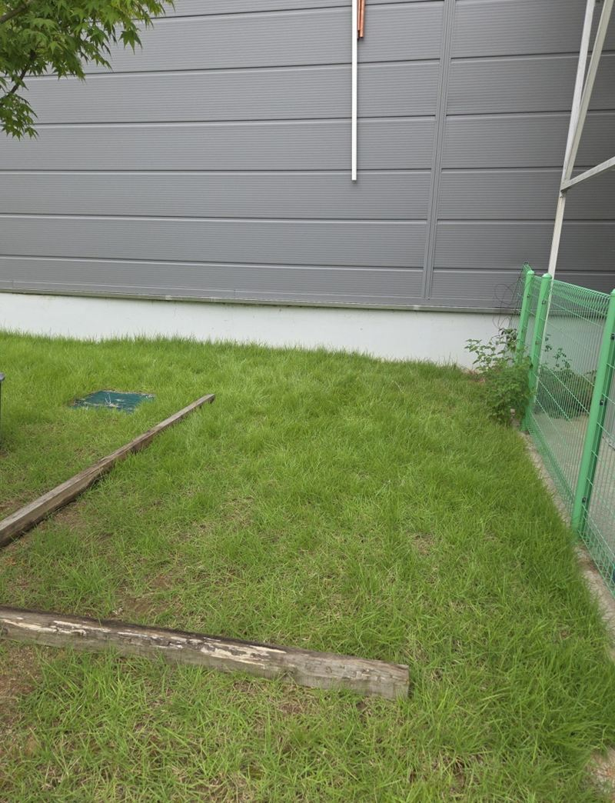
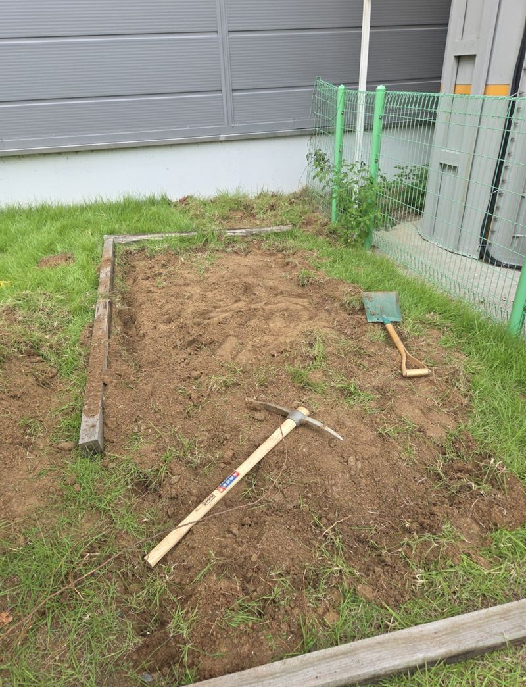
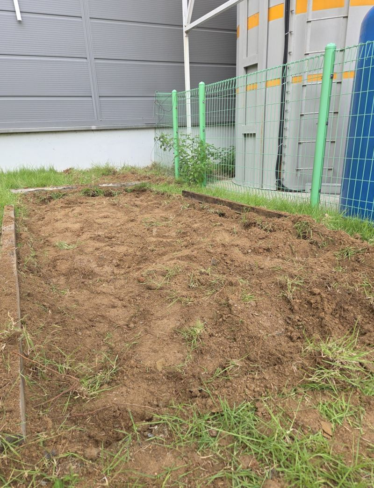
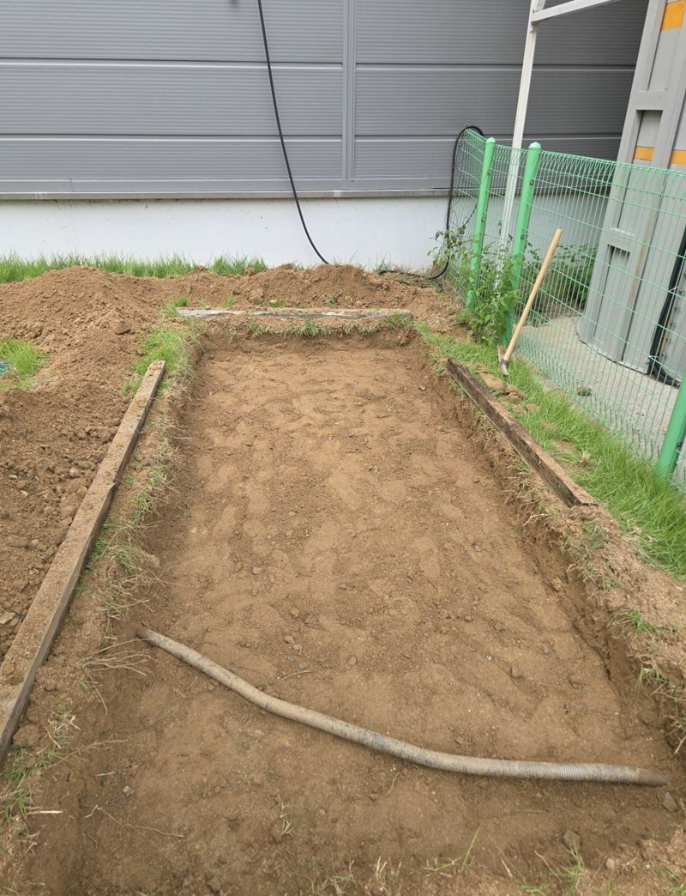
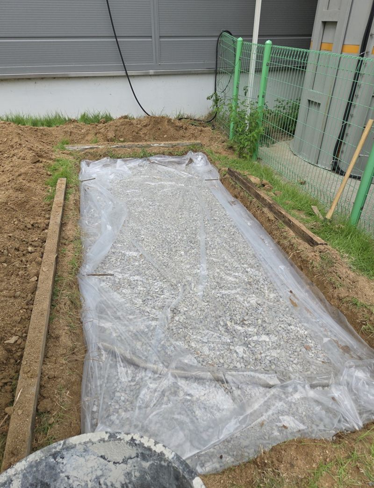
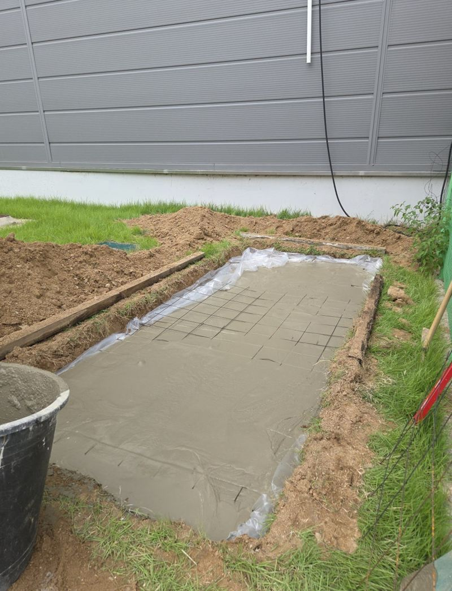
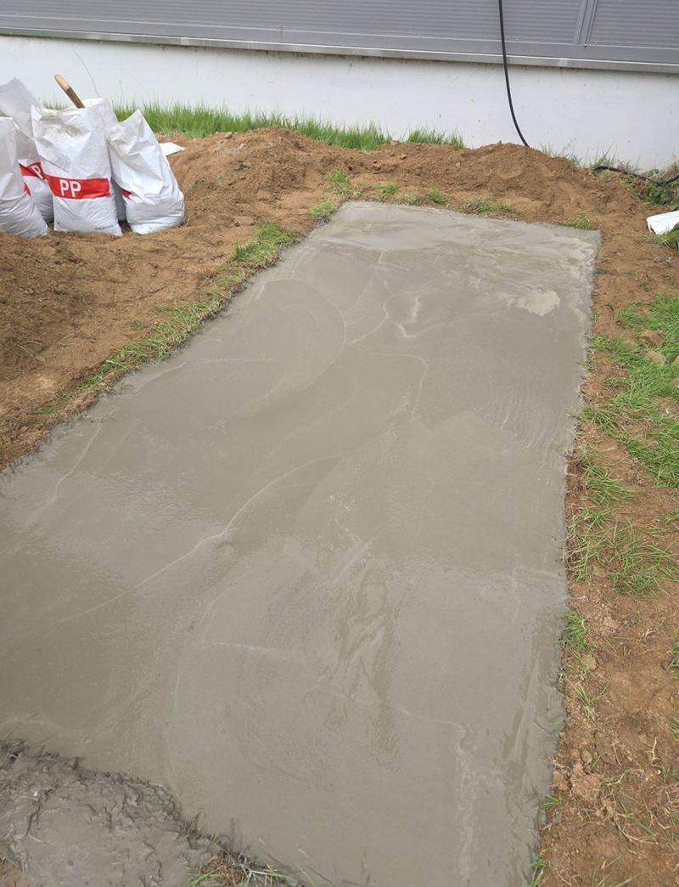

천안 매립 콘크리트 패드 설치 방법

 시공 전시공 후
시공 전시공 후← 밀어서 전후 비교 →
"실외기를 여러 대 올릴 자리라 나중에 꺼지지 않게, 바닥보다 튀어나오지 않게 해 주세요." 회사 마당 한쪽 잔디밭에 실외기 받침을 만드는 현장이었어요. 장비가 들어갈 수 없는 자리라 모두 손으로 해야 했어요. 흙을 파내고 아래를 단단히 잡은 뒤, 바닥 높이에 맞춰 묻히듯 콘크리트를 쳤어요.
| 현장 | 천안 서북구 성거읍 회사 부지 |
|---|---|
| 용도 | 실외기 여러 대를 올릴 매립형 받침 |
| 한 일 | 범위 표시 → 터파기 → 파쇄석 다짐 → 방수포 → 철근 배근 → 몰탈 타설 → 양생 |
| 조건 | 중장비 진입 불가 → 수작업, 이틀에 걸쳐 진행 |
매립 패드와 일반 패드
| 일반(돌출) 패드 | 매립 패드 | |
|---|---|---|
| 모양 | 바닥 위로 턱이 솟음 | 바닥 높이와 거의 같음 |
| 장점 | 시공이 비교적 간단 | 걸려 넘어질 턱이 없고 보기 깔끔 |
| 핵심 | 거푸집 모양 | 파낸 아래 지반을 얼마나 단단히 잡는지 |
실외기는 무게와 진동이 있어 흙 위에 그냥 두면 한쪽이 서서히 내려앉아요. 오래 둘 설비라면 기초를 먼저 만드는 게 안정적이에요.
매립 패드 만드는 순서
터파기
표시한 범위대로 흙을 파냈어요. 깊이는 요청에 맞추되, 바닥이 무르게 남지 않도록 상태를 보며 정리했어요.


파쇄석과 방수포
파낸 자리에 파쇄석을 깔아 다지고, 그 위에 방수포를 덮었어요. 아래에서 올라오는 습기를 막고, 몰탈이 흙으로 빠지지 않게 해요.


철근 배근과 타설
철근을 깔아 뼈대를 만든 뒤 몰탈을 채우고, 주변 바닥 높이에 맞춰 표면을 고르게 폈어요.


양생
충분히 굳을 때까지 밟거나 물건을 올리지 않도록 하고, 이후 실외기를 올리도록 안내했어요.
장비가 못 들어가는 곳이라면
좁은 통로 안쪽이나 건물 뒤편처럼 장비가 들어갈 수 없는 곳도 수작업으로 패드를 칠 수 있어요. 대신 흙 퍼내기, 자재 나르기, 폐기물 정리까지 손으로 해야 해서 날짜가 더 걸려요. 이 현장도 그래서 이틀에 나눠 진행했어요.
매립 패드를 많이 만드는 곳
- 실외기·발전기 받침여러 대를 나란히 올려도 꺼지지 않게요.
- 통행로 옆 설비 자리턱이 없어 걸려 넘어질 일이 없어요.
- 잔디밭·흙바닥비 온 뒤 설비가 기울던 자리를 정리해요.
시공 전에 정해 두면 좋은 것
- 올릴 설비 무게무거운 설비일수록 두께와 철근을 더해요.
- 주변 배수비가 오면 물이 어디로 빠지는지 봐 둬요.
- 전원·배관 위치패드 위에 올릴 설비의 선이 어디로 지나갈지 미리 정해요.
매립 패드 질문
패드 크기는 어떻게 정하나요?
올릴 설비 개수와 크기, 점검할 공간을 생각해 정해요. 실외기 모델과 대수를 알려주세요.
철근은 꼭 넣어야 하나요?
무게가 실리는 자리라 넣는 걸 권해요. 균열을 줄이고 오래 버텨요.
파낸 흙은 어떻게 하나요?
현장에서 모아 정리해요. 처리 방법은 상담할 때 함께 정해요.
비가 오면 작업을 미루나요?
타설 전후에 비가 오면 표면이 상해서 날씨를 보고 일정을 조정해요.
배수구 쪽으로 기울기를 줄 수 있나요?
물이 고이지 않게 살짝 기울기를 주는 것도 가능해요.
기존 잔디는 다시 덮어 주나요?
패드 둘레 정리는 하지만 잔디 복원은 따로 상의해요.
기존 콘크리트 위에 덧칠 수도 있나요?
상태가 단단하면 덧치기도 가능해요. 들떴다면 걷고 새로 쳐요.
다른 바닥 보수 현장
- 은평 주차장 땅꺼짐 구멍 시멘트·아스콘 보수
- 용인 기흥 시멘트 패드 소형 거푸집 설치 방법
- 군포 도로 갈라짐·처짐 복구 공사 방법
- 인천 미추홀 내려앉은 보도블럭 재시공 견적
- 서초 아스팔트 콘크리트 꺼짐 보수 공사 방법
- 양평 보도블럭 교체 공사 방법과 순서
- 인천 연수구 콘크리트 시멘트 메꿈 작업 비용
- 용산 콘크리트 내외벽 균열 방수 페인트 시공 방법
- 강서 지하주차장 콘크리트 벽면·천장 복원 방법 · 블로그
- 김포 주차장 맨홀 주변 땅꺼짐 몰탈 보수 방법 · 블로그
- 김포 소형 싱크홀 아스콘 부분 보수 방법 · 블로그
- 군포 주차장 바닥 주차선 도색 비용과 순서 · 블로그
패드 자리 사진과 올릴 설비 크기·대수를 알려주세요.
전화 상담 010-4517-9872